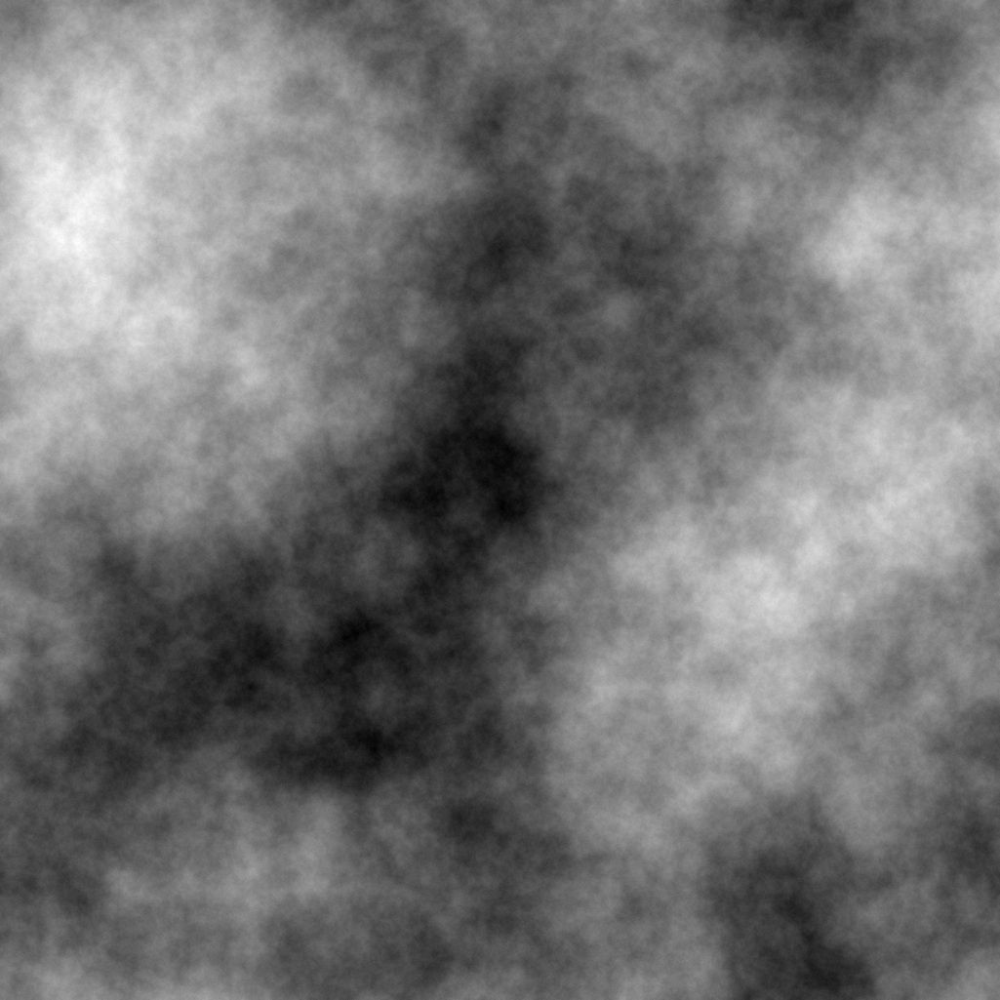

After playing Minecraft for awhile I got interested in procedural terrain generation. I wondered how a world could just be 'generated' while playing a game. So, like all good problems, I wrote a small program to solve it. In my research I can across the Diamond-Square algorithm and made an implementation of it. The output looks like this:
Here, if this image where to be interpreted as a height map, the blacker areas represent higher elevation and the white areas represent lower elevations. Using this data, a map can be generated.
If you want to try it out for yourself, download my implementation. It requires the pypng library to visualize its output. It has been tested on python 2.6.